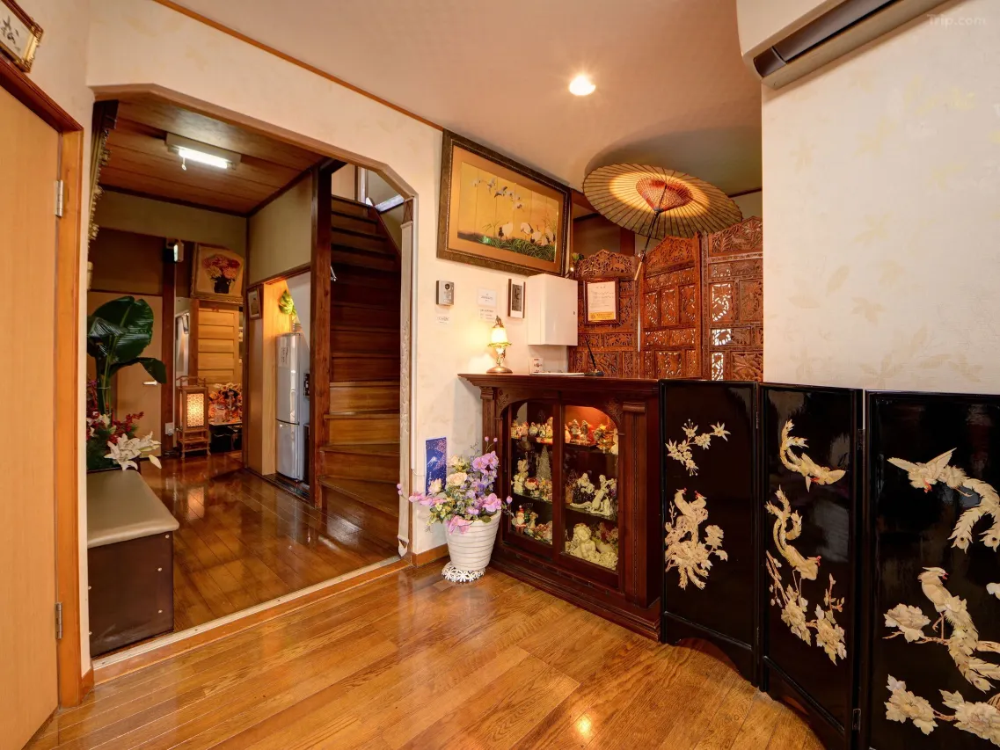
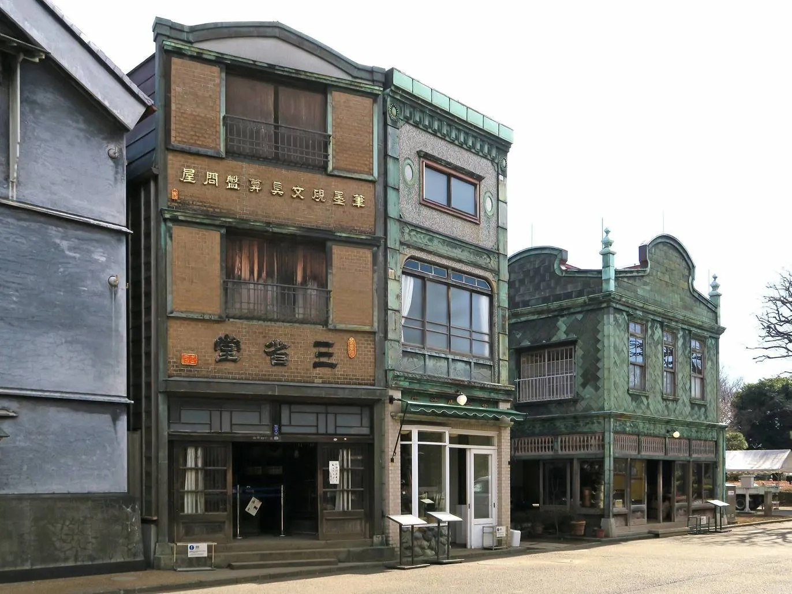
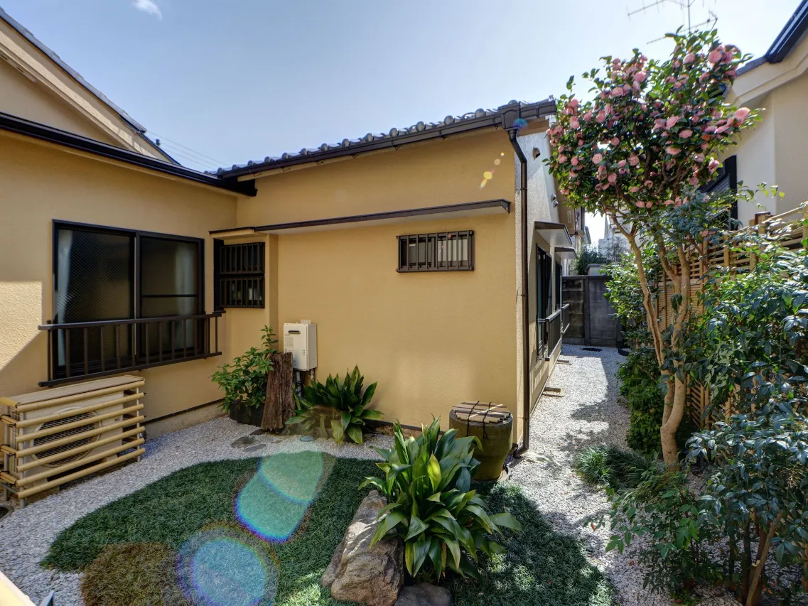
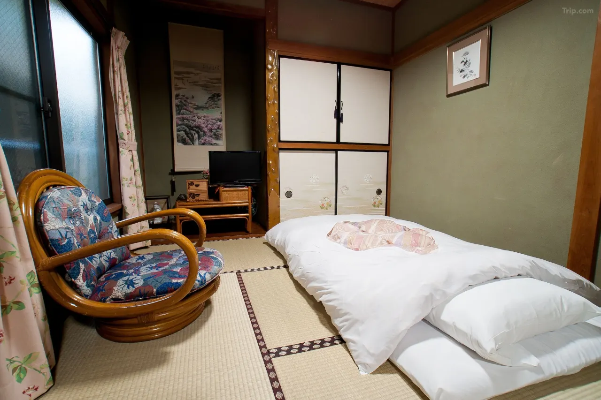
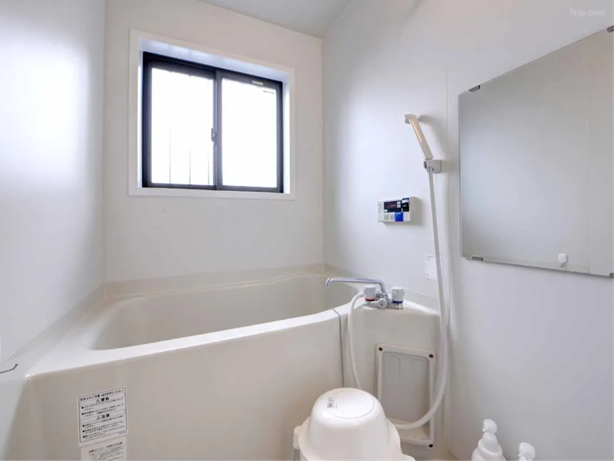
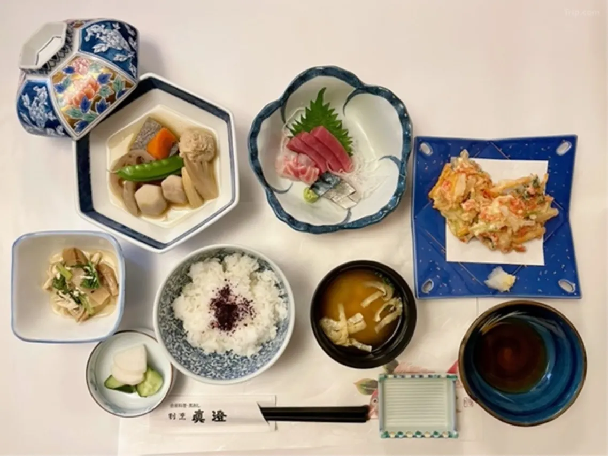
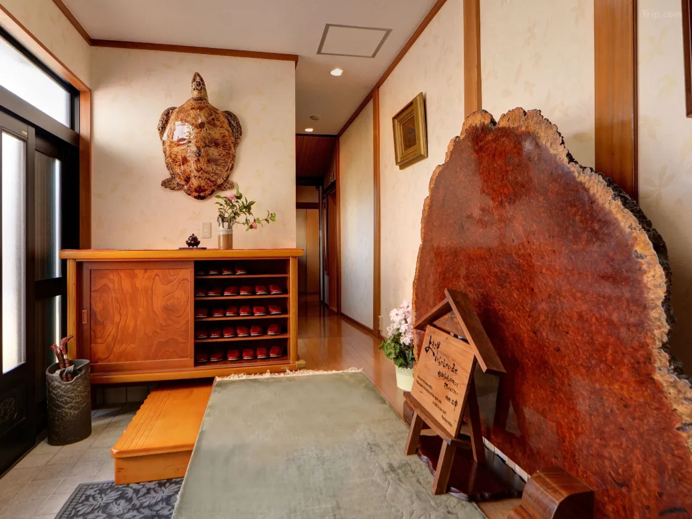
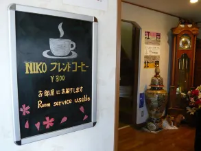

The Edo-Tokyo Open Air Architectural Museum is a fifteen-minute walk from Studio Ghibli's headquarters in Mitaka. During the production of Spirited Away, Hayao Miyazaki visited it regularly — the museum itself acknowledges this explicitly, noting that he came here for inspiration while making the film. Art director Yoji Takeshige confirmed it as a direct source in The Art of Spirited Away. What emerged from those visits is the entire interior world of the film: Kamaji's boiler room, the spirit public bath, Chihiro's parents' restaurant, the dormitory where Sen and Lin sleep between shifts. The museum is in Koganei Park. Ryokan Niko is a twenty-minute walk away. It is the only traditional Japanese ryokan that directly serves this pilgrimage.
Ryokan Niko (旅館二幸) was established in 1953 by the Shimura family on a property that had previously belonged to military personnel stationed near the wartime Tokyo Gakugei University. The name — *niko*, written with the characters 二幸, meaning "double happiness" — combines the first characters of the founder's father and grandfather, both of whose names contain the character 幸 (happiness). Three generations later, the ryokan is still run by the Shimura family: Tsuneo Shimura-san and his wife Eiko-san, who between them maintain the floors, arrange the rooms, and ensure that every guest leaves feeling, as regular visitors describe it, like they have spent the night with relatives rather than in a hotel.
A Showa Property in a Quiet Corner of West Tokyo

The walk from Musashi-Koganei Station takes seven minutes through a residential neighborhood that becomes progressively quieter as it moves away from the tracks. The ryokan announces itself through traditional clay roof tiles visible above the surrounding houses, a red umbrella of the type used at tea ceremonies, and a green noren curtain at the entrance bearing the ryokan's logo. A carved wooden sign to the left reads 旅館二幸 in calligraphy. A stone basin fountain at the entrance produces the specific sound of running water that, in traditional Japanese design, signals arrival at a place built for rest.
The property has been renovated three times since 1953, but the Shimura family has preserved the Showa-era character at each stage: the original round window that remains in the hallway, the wooden pillars beside the tokonoma alcove in each room, the hardwood floors that Shimura-san polishes himself and that reflect light with the particular quality of surfaces maintained by hand for decades. Seven rooms in total — a 14-mat suite with private bath and toilet, and six 7.5-mat rooms with shared facilities. The largest room has fusuma sliding doors painted in traditional style with gold-flake detailing in the panel work. Every room is furnished with thick futon bedding laid out on tatami.
The common areas carry the specific atmosphere of a Showa building that has been lived in continuously — antiques in the stairwell, a large decorative fan mounted in the hall, Café Niko on the ground floor where an analog record player runs during lunchtime and a Beatles sleeve hangs among the wall decorations. The café, opened during the pandemic as a resource for local residents, operates from 11 AM to 3 PM daily except Mondays and can be rented for private events. It is, in its way, the most accurate measure of what kind of establishment Ryokan Niko is: a neighborhood institution that extends its hospitality outward rather than maintaining the ryokan as a sealed world for guests alone.
The Museum and the Pilgrimage

The Edo-Tokyo Open Air Architectural Museum opens at 9:30 AM (closing at 5:30 PM April through September, 4:30 PM October through March; closed Mondays). Admission is ¥400 for adults. From Ryokan Niko, the walk to the museum's east zone — where the Spirited Away buildings are clustered — takes approximately twenty minutes through Koganei Park. The east zone contains Takei Sanshodo, Kodakara-yu, and the Kagiya izakaya in close proximity. Allow a minimum of three hours for the full museum; the Spirited Away buildings alone warrant an hour of careful attention.
The most important object in the museum, for the purposes of this pilgrimage, is the back wall of Takei Sanshodo: a floor-to-ceiling grid of 350 small wooden drawers originally used to store calligraphy brushes and writing implements. This is Kamaji's medicine chest — reproduced in the film with the precision of a measured architectural drawing. Standing in front of it, the distance between Miyazaki's imagination and his research collapses entirely. The drawer wall is not an inspiration. It is a source document. The film reproduced it exactly, and it is still standing in Koganei Park.
Staying at Ryokan Niko positions the pilgrim to arrive at the museum as it opens, before the school groups and weekend crowds. The Ghibli Museum in Mitaka — which requires advance ticket reservation — is approximately 30 minutes door-to-door. Inokashira Park, where Spirited Away's production team took reference photographs of reflected light on water, is 25 minutes away. The pilgrimage logic of west Tokyo is unusually compact from this address.
A Night at Ryokan Niko: What to Expect
Ryokan Niko operates with the informality that distinguishes a small family-run inn from a formal ryokan establishment. Breakfast, when included in the plan, is Western-style and uses bread from a local bakery. Dinner, when included, is sushi sourced from a nearby sushi restaurant that prepares a specific set for the ryokan — or alternatively, a dinner arrangement with a neighboring izakaya that serves a set meal with drinks and additional food available at cost. Neither option is kaiseki cuisine; this is everyday hospitality, precise and generous, without the theatrical formality of a luxury ryokan.
The curfew runs from 10 PM to 6 AM — standard for a residential-neighborhood ryokan of this type. Card payment only; no cash accepted at the property. Children are explicitly welcome, in a way that is notable precisely because many traditional ryokan are not accommodating of young children. Parking is available by reservation at ¥1,100 per day. Multilingual staff provide English-language support for international guests. The overall scale — seven rooms, two proprietors, one neighborhood — produces an experience that no larger property can replicate: the particular quality of being remembered by name, of having your preferences noted, of returning to find that someone anticipated what you needed.
Practical Information
- Check-in: 3:00 PM Check-out: 10:00 AM
- Curfew: 10:00 PM – 6:00 AM
- Meals: Breakfast and/or dinner plans available (Western breakfast; sushi or izakaya dinner)
- Payment: Card only — no cash accepted
- Rooms: 7 rooms — 1 suite (14-mat, private bath) + 6 standard (7.5-mat, shared facilities)
- Edo-Tokyo Museum: 20 min walk — open 9:30 AM, ¥400 adults, closed Mondays
- From Shinjuku: JR Chuo Line to Musashi-Koganei Station (~28 min, ~¥350) → 7 min walk
- Ghibli Museum: ~30 min door-to-door (advance tickets required)
- Language: English support available
- Price range: From approximately ¥6,000–¥12,000 per person per night
| Location | Musashi-Koganei, Tokyo (7 min walk from Musashi-Koganei Station, JR Chuo Line) |
| Category | Traditional Ryokan — Family-Run |
| Anime Connection | Spirited Away — 20 min walk from Edo-Tokyo Open Air Museum (confirmed interior of the film) |
| Established | 1953 — operated by the Shimura family for three generations |
| Rooms | 7 rooms — 1 suite with private bath, 6 standard tatami rooms |
| Meals | Western breakfast (local bakery) · Sushi or izakaya dinner plans available |
| Price Range | From ¥6,000–¥12,000 per person per night |
| Nearest Station | Musashi-Koganei Station (JR Chuo Line) — 7 min walk · 28 min from Shinjuku |
Photo Gallery

Photo 1
Photo 2
Photo 3'">
Photo 4'">
Photo 5'">
Photo 6'">Your Base for the Spirited Away Interior World
Book Ryokan Niko and walk to Kamaji's boiler room before the crowds arrive.
Want the full Spirited Away pilgrimage across Japan? Read our complete guide: Through the Tunnel — Every Real-Life Spirited Away Location in Japan →
← Back to Stay